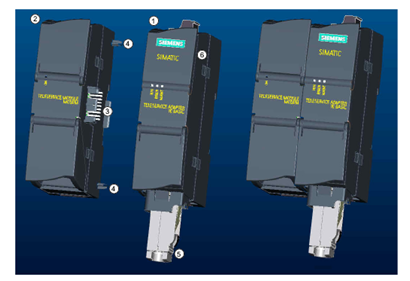
图. 模块外观
TeleService Adapter IE Basic 是新一代适配器侧重于通过 S7-1200 PLC 经工业以太网或 Profinet 实现简单、经济有效且安全的远程服务或远程维护服务。由于采用模块化设计，用户可以根据各自的电信基础设施选择不同的 TeleService 模块。目前，提供带模拟、ISDN、GSM 调制解调器的 TS 模块和一个用于连接外部调制解调器的模块。详细的订货信息请参考下列表格：
|
产品名称 |
订货号 | |
|---|---|---|
|
基本单元 (始终需要)： |
TS Adapter IE Basic |
6ES7 972-0EB00-0XA0 |
|
TS 模块 |
TS Module Modem |
6ES7 972-0MM00-0XA0 |
|
TS Module ISDN |
6ES7 972-0MD00-0XA0 | |
|
TS Module RS 232 |
6ES7 972-0MS00-0XA0 | |
|
TS Module GSM |
6GK7 972-0MG00-0XA0 | |
|
附件 |
S7-300 导轨的安装适配器 |
6ES7 972-0SE00-7AA0 |
|
四频 GSM 天线 |
6NH9 860-1AA00 |
表.订货信息
硬件：
软件：
处于出厂设置的TS Adapter IE Basic 没有IP地址，只有MAC地址，用户需要通过直接连接的方式（如下图所示），使用STEP 7 Basic 软件为其分配IP，然后才能访问其配置网页。首先，您需要通过一根以太网线直接连接（或者经过交换机）将电脑网卡和TS Adapter UE Basic 的以太网口连接起来，如下图所示：
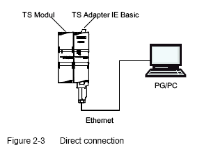
图. 直接连接
一、在STEP 7 Basic V11中，展开项目树下的“Online access”，鼠标双击“Update accessible
devices”，可以经由PC网卡浏览到TS Adapter basic IE。处于出厂设置的TSA
basic没有IP，仅能访问浏览到MAC地址。
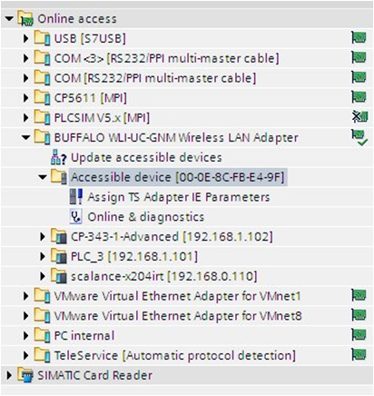
图. 可访问的设备1
二、鼠标双击“Asign TS AdapterIE Parameters”，打开下面窗口：
图. TSA 参数
在“Functions”下面的"Assign IP address ”中填入您需要设定的IP地址和子网掩码。如需要使用路由器，则勾选"Use router”，并在下方的“Router address”中填写路由器的IP地址。填写完成后即点击"Assign IP address “按钮即完成分配。
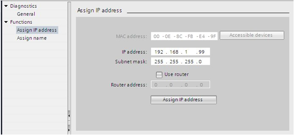
图. 填写IP 地址
设置成功后可以在信息窗口中看到成功信息，并在项目树种刷新出TS Adapter IE basic 的IP地址：
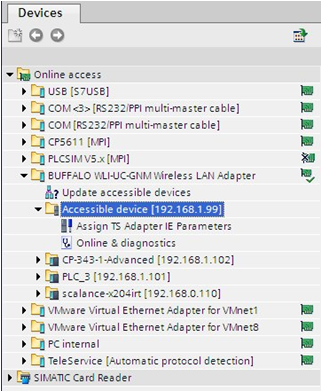
图. 可访问的设备2
接下来您可以按照下面网络结构来连接远程的PLC设备了，在电脑本地，需要有一个电话调制解调器连接到公共电话网络，在PLC远程一侧，也需要将一根公共电话网络的电话线插到TS Module上，通过一根以太网线或者经过交换机，将TS Adapter IE Basic 的以太网口和CPU1200的以太网口连接起来。
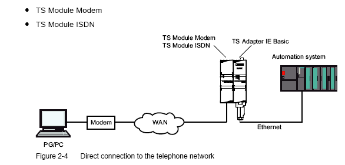
图. 远程连接
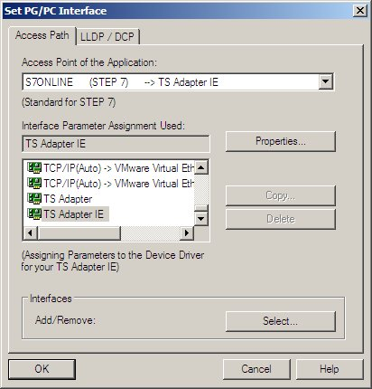
图. 设置PG/PC接口
第一次使用TS适配器时，设置PG/PC 接口中可能没有“TS Adapter IE”， 您需要点击上图中的“Select...”按钮添加，如下图所示，选中左侧的“TS Adapter IE”，点击“Install-->”按钮添加。
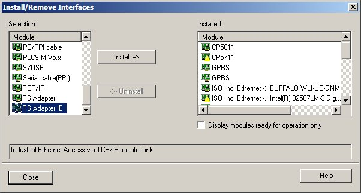
图. select
图. 在线访问
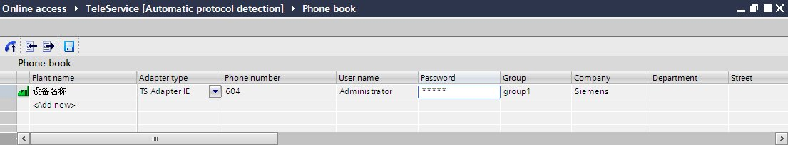
图. 电话薄
可以双击指令树中的“Set up/close remote connection”或者直接点击电话簿左上角的按钮，建立拨号连接。
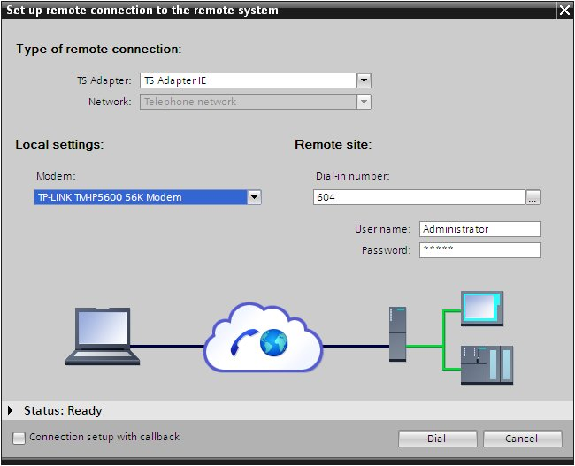
图. 建立拨号连接
拨号连接成功建立后，双击项目树中的“Update accessible devices”, 就能够在在线和访问中浏览到远程的设备了，如下图所示
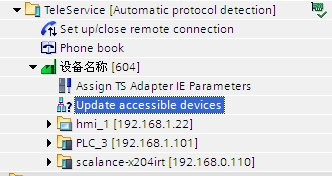
图. 远程的设备。
图. 扩展的下载到设备
当您完成下载任务后，您可通过再次双击项目树中"Online access”-->"Set up/close remote connection”， 即可挂断拨号连接，如下图所示：
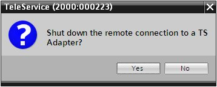
图. 挂断连接